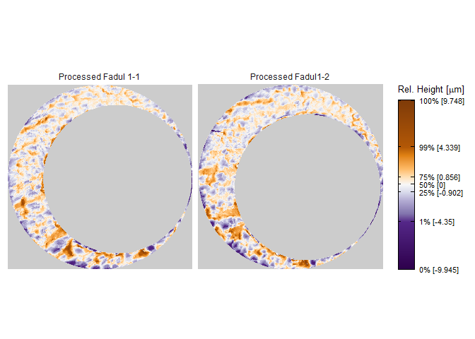

The cmcR package provides an open-source implementation of the Congruent Matching Cells method for cartridge case identification as proposed by Song (2013) as well as the “High CMC” method proposed by Tong et al. (2015).
Installation
Install the development version from GitHub with:
# install.packages("devtools") devtools::install_github("jzemmels/cmcR")
Cartridge case scan data can be accessed at the NIST Ballisitics and Toolmarks Research Database
Example
We will illustrate the package functionality here. This intended to be a concise demonstration, so please refer to the package vignettes available under the “Articles” tab of the package website for more detailed information.
Consider the known match cartridge case pair Fadul 1-1 and Fadul 1-2. The read_x3p function from the x3ptools package can read scans from the NBTRD given the appropriate address. The two scans are read below and visualized using the x3pListPlot function.
fadul1.1 <- x3ptools::read_x3p("https://tsapps.nist.gov/NRBTD/Studies/CartridgeMeasurement/DownloadMeasurement/2d9cc51f-6f66-40a0-973a-a9292dbee36d") fadul1.2 <- x3ptools::read_x3p("https://tsapps.nist.gov/NRBTD/Studies/CartridgeMeasurement/DownloadMeasurement/cb296c98-39f5-46eb-abff-320a2f5568e8") cmcR::x3pListPlot(list("Fadul 1-1" = fadul1.1, "Fadul 1-2" = fadul1.2), type = "faceted")

Preprocessing
To perform a proper comparison of these two cartridge cases, we need to remove regions that do not come into uniform or consistent contact with the breech face of the firearm. These include the small clusters of pixels in the corners of the two scans, caused by the staging area in which the scans are taken, and the plateaued region of points around the firing pin impression hole near the center of the scan. A variety of processing procedures are implemented in the cmcR package. Consider the funtion reference of the cmcR package for more information regarding these procedures. As is commonly done when comparing cartridge cases, we first downsample each scan (by a factor of 4, selecting every other row/column) using the sample_x3p function.
fadul1.1_processed <- x3ptools::sample_x3p(fadul1.1) fadul1.1_processed$surface.matrix<- fadul1.1_processed$surface.matrix %>% cmcR::preProcess_ransac() %>% cmcR::preProcess_levelBF() %>% cmcR::preProcess_cropWS() %>% cmcR::preProcess_removeFPCircle() %>% cmcR::preProcess_gaussFilter(res = fadul1.1_processed$header.info$incrementY) fadul1.2_processed <- x3ptools::sample_x3p(fadul1.2) fadul1.2_processed$surface.matrix<- fadul1.2_processed$surface.matrix %>% cmcR::preProcess_ransac() %>% cmcR::preProcess_levelBF() %>% cmcR::preProcess_cropWS() %>% cmcR::preProcess_removeFPCircle() %>% cmcR::preProcess_gaussFilter(res = fadul1.2_processed$header.info$incrementY) #manually update scan metadata processing fadul1.1_processed$header.info$sizeY <- ncol(fadul1.1_processed$surface.matrix) fadul1.1_processed$header.info$sizeX <- nrow(fadul1.1_processed$surface.matrix) fadul1.2_processed$header.info$sizeY <- ncol(fadul1.2_processed$surface.matrix) fadul1.2_processed$header.info$sizeX <- nrow(fadul1.2_processed$surface.matrix) cmcR::x3pListPlot(list("Processed Fadul 1-1" = fadul1.1_processed, "Processed Fadul1-2" = fadul1.2_processed), type = "faceted")

Cell-based comparison procedure
The scans are now ready to be compared using the cell-based comparison procedure. This is performed using the cellCCF_bothDirections function.
kmComparison <- cmcR::cellCCF_bothDirections(x3p1 = fadul1.1_processed, x3p2 = fadul1.2_processed, thetas = seq(-30, 30, by = 3))
We may be interested in phase (x,y, and θ) at which each cell/region pair attained the maximum cross-correlation (for example, this information is used to define matches vs. non-matches under the original method of Song (2013)). The topResultsPerCell function calculates this information from a list of CCF results (as returned by the cellCCF_bothDirections function) and returns it as a data frame. As the name implies, cellCCF_bothDirections performs the cell-based comparison procedures in both directions (i.e., Fadul 1-1 is partitioned into a grid of cells and compared to regions in Fadul 1-2 and vice versa), hence the $ extraction of the kmComparison list object below. A sample of the output is given below.
kmComparison$comparison_1to2$ccfResults %>% cmcR::topResultsPerCell() %>% head() #> # A tibble: 6 x 8 #> # Groups: cellID [6] #> cellNum cellID fft.ccf dx dy theta nonMissingProport~ ccf #> <int> <chr> <dbl> <dbl> <dbl> <dbl> <dbl> <dbl> #> 1 3 y = 1 - 73, x = 14~ 0.469 4 -2 -30 0.512 0.640 #> 2 4 y = 1 - 73, x = 21~ 0.253 -28 6 -27 0.496 0.537 #> 3 5 y = 1 - 73, x = 29~ 0.274 -7 -24 -3 0.525 0.503 #> 4 6 y = 1 - 73, x = 36~ 0.252 12 6 27 0.604 0.563 #> 5 7 y = 1 - 73, x = 43~ 0.258 -30 -22 21 0.125 0.783 #> 6 2 y = 1 - 73, x = 74~ 0.322 19 -19 9 0.149 0.855
Decision rule
The final step in the CMC methodology is to apply a decision rule to the features extracted from the cell-based comparison procedure to declare a cell/region pair “congruent” or not. The number of “congruent” cell/region pairs is used as a similarity score between the two cartridge cases considered; the higher the number of congruent cell/region pairs, the more evidence there is that the cartridge case pair is a match. The various proposed CMC methods (two of which are implemented in the cmcR package) differ principally on the decision rule used to classify “congruent” cells. The cmcFilter_improved function applies the decision rules from the original method of Song
(2013) and the High CMC method of Tong et al. (2015) to the output of the cellCCF_bothDirections function. Phase an correlation thresholds need to be set by the user.
kmCMC <- cmcR::cmcFilter_improved(cellCCF_bothDirections_output = kmComparison, ccf_thresh = .5, dx_thresh = 20, theta_thresh = 6)
The decision rule of the original method of Song (2013) only considers one of the two possible comparison directions. As such, we obtain a congruent matching cell count for both directions. The comparison_1to2 direction refers to the case where Fadul 1-1 is partitioned into a grid of cells and compared to regions in Fadul 1-2.
nrow(kmCMC$originalMethodCMCs$comparison_1to2) #> [1] 17 head(kmCMC$originalMethodCMCs$comparison_1to2) #> # A tibble: 6 x 8 #> cellNum cellID fft.ccf dx dy theta nonMissingProport~ ccf #> <int> <chr> <dbl> <dbl> <dbl> <dbl> <dbl> <dbl> #> 1 17 y = 146 - 218, x =~ 0.386 1 -10 -18 0.618 0.896 #> 2 25 y = 219 - 290, x =~ 0.320 -7 12 -24 0.893 0.701 #> 3 32 y = 219 - 290, x =~ 0.216 -7 3 -24 0.880 0.633 #> 4 33 y = 291 - 362, x =~ 0.335 -6 0 -21 0.916 0.722 #> 5 34 y = 291 - 362, x =~ 0.314 -10 -1 -21 0.377 0.661 #> 6 46 y = 363 - 435, x =~ 0.308 -14 17 -21 0.481 0.860
Conversely, the comparison_2to1 direction refers to Fadul 1-2 is partitioned into a grid of cells and compared to regions in Fadul 1-1. The CMC counts we obtain are similar for both directions.
nrow(kmCMC$originalMethodCMCs$comparison_2to1) #> [1] 8 head(kmCMC$originalMethodCMCs$comparison_2to1) #> # A tibble: 6 x 8 #> cellNum cellID fft.ccf dx dy theta nonMissingProport~ ccf #> <int> <chr> <dbl> <dbl> <dbl> <dbl> <dbl> <dbl> #> 1 6 y = 1 - 73, x = 36~ 0.244 -17 -14 12 0.631 0.533 #> 2 17 y = 147 - 219, x =~ 0.492 -2 5 21 0.588 0.829 #> 3 43 y = 366 - 438, x =~ 0.319 16 2 18 0.200 0.777 #> 4 55 y = 439 - 511, x =~ 0.353 -12 20 9 0.894 0.602 #> 5 50 y = 439 - 511, x =~ 0.355 6 0 21 0.912 0.685 #> 6 14 y = 74 - 146, x = ~ 0.447 -12 -8 9 0.345 0.839
The High CMC method of Tong et al. (2015) applies more stringent criteria to classify congruent vs. non-congruent matching cells. However, it also tends to assign a higher CMC count than original method of Song (2013). Such is the case in the example considered.
nrow(kmCMC$highCMCs) #> [1] 40 head(kmCMC$highCMCs) #> # A tibble: 6 x 9 #> cellNum cellID fft.ccf dx dy nonMissingPropor~ ccf theta comparison #> <int> <chr> <dbl> <dbl> <dbl> <dbl> <dbl> <dbl> <chr> #> 1 18 y = 146 ~ 0.483 -15 22 0.194 0.815 -27 compariso~ #> 2 47 y = 363 ~ 0.297 -19 22 0.978 0.515 -27 compariso~ #> 3 52 y = 436 ~ 0.259 5 8 0.947 0.642 -27 compariso~ #> 4 60 y = 508 ~ 0.270 10 -1 0.920 0.600 -27 compariso~ #> 5 62 y = 508 ~ 0.484 10 -7 0.658 0.692 -27 compariso~ #> 6 4 y = 1 - ~ 0.304 -15 7 0.496 0.523 -24 compariso~
We can visualize the congruent matching cells for the comparison considered using the cmcPlot function. Tong et al. (2015) recommend using the minimum of the two CMC counts determined under the original method of Song (2013) as the “initial” CMC count before applying the High CMC method criteria. This is what is visualized below.
cmcPlots <- cmcR::cmcPlot(x3p1 = fadul1.1_processed, x3p2 = fadul1.2_processed, cellCCF_bothDirections_output = kmComparison, cmcFilter_improved_output = kmCMC, #arguments dictating output colors: height.colors = colorspace::desaturate(c('#7f3b08','#b35806', '#e08214','#fdb863', '#fee0b6','#f7f7f7', '#d8daeb','#b2abd2', '#8073ac','#542788', '#2d004b'), amount = .75), cell.colors = c("#a60b00","#1b03a3"), cell.alpha = .15, na.value = "gray80") cmcPlots$originalMethodCMCs
cmcPlots$highCMCs